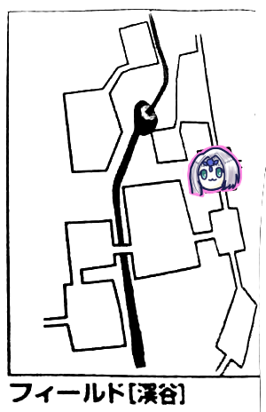
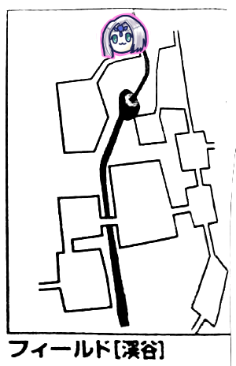
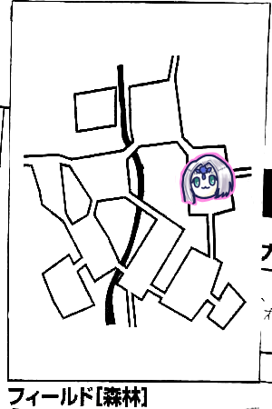

ソードワールドエターナルキャンペーン記念すべき第10回はーじまーるよー！
ナナシ「シドに前回手に入れたの判定をしてもらいたいんだけど」
前回手に入れた刀というのは、地縛霊ケビンを成仏させたお礼の品ですね！
今は渓谷にいるから帰ってからになりますね。まずは魚釣らないと。
GM「釣りのルールですが、自由行動時に探索の代わりに選択することができます。湖畔エリアはどこでも釣れます。渓谷は川の近くで釣れますが、切り立った崖とかでは釣れません。釣れるエリアであるかは都度確認してください」

というわけで前回の続きで、渓谷の入口からです。
ここは切り立った崖になっているが、川べりまで降りられるので魚釣りができる模様。
GM「釣りはレンジャー技能＋器用度で達成値12になります」
みぞれ「あれ？達成値は明かさないって言ってなかったっけ？」
GM「んー、あー、いいよ、エリアにいる限りにおいては明かします」
みぞれ「そんじゃ釣りまーすころころ。成功ー」
GM「1d6÷2が釣れた魚の数になります」
みぞれ「切り上げ？切り下げ？」
GM「切り上げ」
みぞれ「ころころ…お、5だから3匹！大漁ー！」
「あれ？今何時だったっけ？」
GM「エリア移動直後だから朝の6時だね」
「何匹釣らなきゃいけないんだったっけ」
GM「10匹です。ただしこのミッションは隠し要素があります」
「お、たくさん釣ればいいってことか」
GM「いや、時間ですね。1週間以内に達成すれば経験値が増えます」
「えーと、今は依頼を受けてから…3日か」
「ということは帰りの日数を考えて…1日で全部釣ればOK」
「え、できんのそれ」
ピーター「とりあえず探索しまーす、成功」
GM「七色蜂の蜜を2d6個入手しました」
ピーター「ころころ…7個でーす」
「これ確か一度釣りすると魚が警戒してそのエリアでは翌日まで釣れなくなるって話だったけど、複数人で同時にやった場合どうなるの？」
GM「探索と同じ扱いで1人しか適用しないようにしましょう」

渓谷の小屋エリアから北に向かいます。
タッシュ「イベント4です」
GM「渓谷イベントです、1d6どうぞ」
タッシュ「4です」
GM「君たちは崖の細い道を進まなければならない」
「崖の細い道」
「漫画とかアニメとかで出てくるよく人が落ちたりするあれか」
GM「冒険者LV+敏捷で判定してください。全員判定に成功しないと諦めて戻ることになります」
「全員にロープつないでいこうぜ」
GM「達成値はこっちがサイコロで決めます。ころころ…12です」
ブルーローズ「失敗しました」
ピーター「失敗しました。知ってた」
GM「失敗した人は自由行動消費して再判定どうぞ」
なんとか通り抜けられたようです。
そしてこのエリアは川は見えるものの切り立った崖で釣りはできない模様。
探索しましたが全員失敗しました。かなしい。

GM「廃村です。東に上り方向の山道が、北西に吊り橋があります。集落は調べることができるけど、前回やったからわかるよね、ゾンビとの確定戦闘になります」
ピーター「イベント振りまーす4」
GM「渓谷イベントです」
ピーター「3です」
GM「崖崩れが発生しました」
みぞれ「クリった、ひらり」
GM「失敗した人手あげて」
ピーター「はい…え、私だけー！？」
GM「17点ダメージ」
ピーター「パークメール撃っていいすか」
GM「どうぞー」
みぞれ「あれ、これバイクは別で振るんだっけ？…うえ、失敗」
ブルーローズ「キュアハートをうさちゃんにかけます！」
ピーター「全快しました！」
ブルーローズ「ザイアの愛を受け取りなさい！」
ピーター「大丈夫？ぼく呪われた種族だけど」
ブルーローズ「ならばザイアの分だけ私が愛します」
イケメンだった。
ブルーローズ「そう言えば主って移動しないんですか？」
GM「あ、忘れてた、初期位置にします」
「前回ストーカーされたよね」
GM「あれはキノコを持ってたからですね」
そういう仕様なのか！
みぞれ「バイクどうやって直せばいいんだったっけ」
「アースヒールしかダメじゃね」
みぞれ「タッシュ先生お願いします」
GM「さて、自由行動どうしますか？」
ナナシ「ナナシさん戦闘がしたいです」
「この先どんだけ戦闘あるかわからないし魚集まってからにしない？」
ナナシ「じゃあ探索にする…はいしっぱーい」

ナナシ「イベント1！何も起こらない」
ナナシ「探索しまーすころころ、成功」
ピーター「探索しまーすころころ、成功(ナナシより出目が良い)」
ナナシ「うさぎに勝てない」

北へ進みます。
GM「ここは山の頂上です。フィールド全体が見渡せます。レンジャー/セージ+知力で12出すとここで釣れる場所が全て分かります」
ブルーローズ「とりあえずイベント振ります。1！何もない！」
ピーター「じゃセージ技能で判定します。17！」
GM「成功ですね。魚が釣れる場所はこことこことここです」
「なるほど」
「ここウンディーネの場所ですね」
「左上は主の巣では」
「とりあえずウンディーネのところ行こうか」

北へ進みます。確かここは森だったはず。
みぞれ「イベント2です」
GM「何もないです…」
ピーター「そんな不服そうな」

GM「滝壺に到着しました。ここは暗いです、つまり」
「タッシュ先生お願いしまーす」
タッシュ「ぺかー」
ウンディーネ「あら貴方達、お久しぶりー！」
ピーター「もらったお土産すごく役に立ったよ！ありがとう！」
「本当にな！！！！！」
ウンディーネ「私のクエストを達成してくれたから恩を返すのは当然よー！それで今日は何しにきたの？」
ピーター「魚釣りに」
タッシュ「これ手伝ってくれたりするのかしら」
GM「手伝ってくれます」
「まじかやったー！」
GM「ウンディーネに手伝ってもらうと、3人分の結果を適用できます。なおかつ、成功したら匹数の振り直しができます」
「それじゃ手伝ってもらおう」
GM「釣りする人をウンディーネが囲ってくれます」
「生簀か何かかな？」
GM「ここも達成値は12です」
「待って、イベント振ってない」
「忘れてた、時を巻き戻そう」
タッシュ「3です」
GM「ふむ。1d6どうぞ」
タッシュ「4です」
GM「この洞窟の中には廃村がありました」
「いやいやいや何言うてるんですか」
GM「廃村イベント表使えって書いてあるので…探索達成値15で成功すると遺跡が見つかります」
ナナシ「遺跡バイヤーとしては当てておきたいな！知力の指輪セット」
みぞれ「15出ました」
ナナシ「俺も一応振ろう、はい成功」
GM「では君たちは遺跡を見つけました」
タッシュ「これで手持ちの遺跡は5個…いや、おかしくない？」
ナナシ「まじ迷宮屋」
ピーター「もうこれで暮らしていける」
時を戻して釣りを再開。
3人分適用できると言っても、この中でまともな数値を叩きだせそうなのはみぞれぐらいしかいません。なのでみぞれのみウンディーネに囲まれてチャレンジ。
みぞれ「はい成功。数は…1なので振り直します…3！これを適用して2匹釣りましたー！」
残り5匹！
「さて、ここからどうしましょ、主のところ行く？」
「キノコ持っていって主と遭遇したら投げてあさっての方向に向かわせられないかな」
「キノコ滝壺に投げてウンディーネさんにタコ殴りしてもらうとか」
主のところに行くにしろ行かないにしろ、戻る必要があるので戻ることにしました。
ピーターがイベントを振って1。何もありません。平和が続きます。
ナナシ「イベント振りまーす6」
「おっとー？」
GM「はい戦闘ですね。がっちりした体つきの怪物が1体、歯の色は青白く眼球が白濁しています。腹から黒い水をだらだら流しています。傷がありますが治っていきます。それから猫背で身体が青白く長い爪を持った怪物が2体。ぼろぼろだがそこそこいい身分の服をまとっていて、魔法文明語で喋ってきます」
ピーター「魔法文明語…わかんない」
タッシュ「わかる」
GM「マナの扱いも知らん奴隷どもがどーのこーのと言ってます」
ピーター「セージ判定しまーす」
GM「はい、両方弱点抜きました。1体の方はシンです。2体の方はグールメイジですね。こいつは会ったことありますね」
ナナシ「先行取った！」
「どうしよう、みぞれちゃんグレラン撃つ？」
みぞれ「えーと、前衛から前衛の間ってどれぐらいあるんだっけ？」
「10mかな」
「いや5mだよ」
みぞれ「5mなら後衛にグレネード撃つけど」
「いや10mだったわ」
みぞれ「じゃ後衛には届かないですね、1体だけに撃つのはもったいないからやめとくわ」
タッシュ「じゃファイアウェポンを前衛の2人にかけまーす。成功」
ブルーローズ「10m前に出ますね、こんにちはっと」
ナナシ「今の流行りはこにゃにゃちはー」
「え？」
「こにゃにゃちはーって元ネタなんだっけ？天才バカボン？」
「いやカードキャプター」
「そっちかよ」
バカボン派とカードキャプター派でしばしわいのわいのするパーティーであった。
ブルーローズ「マッスルベア魔力撃トンファーでシンを攻撃します！えーとこれファイアウェポンで2点、弱点で3点かな？あ、命中13」
GM「回避失敗しました」
ブルーローズ「やった！27点でーす」
GM「防護点引いて22点くらいました」
残り21点。
ブルーローズ「2撃目いきまーす」
GM「そっちも回避失敗」
ブルーローズ「ダメージは…あっ1ゾロ…」
ナナシ「名物が出た」
ブルーローズ「経験点にならないファンブルです、なかなか自動失敗チェックつかないんですよねーこんだけファンブル出してるのに」
ナナシ「じゃ俺適当に接敵…」
「適当ｗ」
ナナシ「挑発攻撃を『レイピアで』します。メイスないんですよ…」
「例の拾い忘れか」
GM「回避失敗」
ナナシ「お、クリティカル」
「レイピアクリティカル9で出るんだ、よかったじゃん」
ナナシ「よかった！…合計で12点ダメージ」
GM「12点から防護点引いて弱点ダメージ足して残り11点です」
みぞれ「えーと、明日への一歩で3m移動します。でエフェクトバレット炎をシンに…あ、命中低っ」
GM「避けました」
みぞれ「ですよねー」
ナナシ「こいつブレードスカートで倒せると思うんだけどなー(ちらっちらっ)」
ピーター「フレイムアローをシンに撃ちます」
GM「抵抗失敗しました」
ナナシ「まじで、え、しんじゃう？ブレードスカート使えない？」
ピーター「ダメージ15でーす」
GM「シンは撃破されました」
ナナシ「くっそー」
ブルーローズ「お前どっちの味方なんだよ」
ピーター「副行動でグールメイジの片方にパラミス撃っときます」
敵のターン。
GM「はー(溜息)…何するか決まってんじゃんこんなの」
ナナシ「こっちもはー(溜息)ですよ！」
GM「ナナシを起点にライトニングボルト」
ナナシ、タッシュ、みぞれに当たりました。ナナシのみ抵抗。
GM「ダメージは…クリった」
タッシュ「あ、これ死ぬかもしれん」
GM「とりあえずナナシに7点ダメージ。あ、またクリった。29点ダメージです」
みぞれ「やっべ、残り5点なんだけど」
タッシュ「倒れましたー」
GM「それじゃタッシュのコマを倒して…と、これタッシュ先生どれかわからんな、見た目魔法使いじゃねーもん」
GM「さて、グールメイジはもう1体いるんだな。『わたしもあんたに続くよー』」
「夫婦かよ」
GM「ファンブルしました…」
みぞれ「助かった」
プレイヤーのターン。
みぞれ「タッシュのかたきー！射程距離まで移動してグレネード！」
GM「旦那失敗、奥さん抵抗成功しました」
みぞれ「14点でーす」
ピーター「ファイアブラスト撃ちます」
タッシュ「すまんねぇわたしが倒れたばっかりに」
GM「奥さんだけ抵抗しました」
「奥さんつよい」
ピーター「14点です、そして奥さんにパラミス撃ちます」
ブルーローズ「いっぱい残ってる方を殴ります」
みぞれ「奥さんですね」
ブルーローズ「奥さん殴ります！」
タッシュ「あとはブルーローズと奥さんのおふたりでよろしくどうぞ」
ナナシ「キャットファイトかな」
ブルーローズ「キャッツアイ入れて魔力撃トンファーいきます」
GM「回避失敗」
ブルーローズ「ぶん殴ります！今度はちゃんとダメージ出たよ！」
みぞれ「出目4でちゃんとダメージ出たってのが涙ぐましい」
GM「えーと17点ダメージですか」
ブルーローズ「追撃します！命中13、低いぞー」
GM「いや、それでもきついんだよね」
ピーター「パラミスかかってるしね」
GM「回避16、パラミスで15、弱点で14…勝った、回避成功」
ナナシ「奥さんをを通常攻撃」
ブルーローズ「挑発じゃなくて？」
ナナシ「残り2点だし？はい18点ダメージ」
GM「無理です。撃破されました」
GM「じゃこっちのターンね。ナナシ起点にライトニング」
これが全員当たってしまうという事態に。
GM「これは妻の分だ！クリティカル、17点ダメージです」
みぞれ「-12、あれこれ死ぬんじゃ」
「うちの釣り師が！」
みぞれ「あ、生命抵抗足せるんだっけ、生命抵抗7、ダイスも7、生きてた！」
そしてブルーローズが旦那をさくっと撃破しました。
初回から死屍累々なんですがそれは。
ブルーローズ「アウェイクンをみぞれに、そしてキュアハートしまーす」
みぞれ「タッシュを応急手当てします」
ピーター「ウィスパーヒールしまーす」
ナナシ「シンちゃん剥ぐよー」
GM「珍しい宝石を手に入れました」
みぞれ「ポーションは行動消費しないんだっけ？ヒーリングポーション飲みます」
ピーター「グール剥ぎまーす」
GM「グールエキスです」
タッシュ「嫁剥ぎます」
GM「自動でグールエキス入りまーす」
まだ戻ります。南へ。
ブルーローズ「イベント5です」
GM「渓谷イベントです。大きなキノコがあります。見識判定どうぞ」
ピーター「判定しまーす。成功」
GM「これは蛇キノコです、蛇の好物です、蛇をおびきよせることができるよー！」
「捨てます」
みぞれ「イベント6、モンスターも6です…」
「まじか」
GM「戦闘でーす。前衛に黒い犬が2匹、後衛に翼の生えた尻尾のある動物2匹」
ピーター「セージ判定します」
GM「前衛はヘルハウンド、弱点抜きました。後衛はダスキーグレイス、こっちは弱点抜いてません」
ピーター「ファイアブラストを前後に」
ナナシ「ヘルハウンド炎無効だよ」
ピーター「まじか」
ブルーローズ「これ敵がこっちにファイアウェポンをかけてきたらどうなるの？」
タッシュ「それは断れます。ドワーフ問題てのがあってね、パーティー全員ドワーフにして敵にファイアウェポンかければいいって話になるんですよ」
ピーター「じゃウィンドカッターの4倍がけで」
みぞれ「ピーター水系の魔法ないの？」
ブルーローズ「うさちゃん草ポケモンだからしょうがない」
ナナシ「ぴーたー、くさぽけもん(例の解説風に)」
GM「ダスキーBだけ抵抗失敗しました」
ピーター「13点です、でヴォーパルウェポンをブルーローズにかけます」
みぞれ「グレネード撃とうかなー」
「グレネード炎属性だよ」
みぞれ「ほんまや、じゃ前衛の後に行動します」
タッシュ「こっちもそうします」
ブルーローズ「よし、それじゃ…先に行っていいかな？キャッツアイマッスルベア魔力撃トンファーでヘルハウンド殴ります…お、命中高いよー21」
ナナシ「これは威力出ないやつだな」
GM「回避失敗」
ブルーローズ「い、いっこずつ振りましょう…ころころ、よし、ころころ、おっけー、23です！」
GM「21点くらいます」
ブルーローズ「追加攻撃！」
GM「回避しました」
タッシュ「どうしようかな、ダスキーも巻き込もうか…」
ナナシ「ダスキーはブルーローズが尻尾と尻尾で語り合うから大丈夫」
ブルーローズ「それいい思い出ないんだよね」
タッシュ「よし、じゃリープスラッシュ2倍がけわんちゃんに向かって…16！」
GM「わんちゃん抵抗します！はい2匹とも抵抗失敗」
タッシュ「ダメージは…2d6が3！危ない！9点です」
みぞれ「タゲサソリバレで瀕死のわんちゃんに攻撃、おっ命中18」
GM「回避できません」
みぞれ「わんちゃん撃破ー！ぱーん！」
ナナシ「挑発攻撃を残りのわんちゃんに！」
GM「回避失敗」
ナナシ「回れ回れー！9！よっしゃクリティカルだ！…あっ1ゾロ」
「やべぇ3体残っちゃった」
GM「ヘルハウンドが炎を吹きます、目標ナナシとブルーローズ、生命抵抗目標12でどうぞ」
2人とも抵抗成功！
GM「13、半減で6点どうぞ」
ナナシ「俺ダメージ1点！このためのストロングブラッド！」
GM「ダスキーAがダスキーBにファナティ…いや、逆だな、BがAにファナティシズム、そしてブルーローズに魔神語をぎゃーぎゃー言いながら攻撃します」
ブルーローズ「私魔神語分かりますよ！ごげげげげ」
ダスキー「ほう、少しはできるようだな！」
ブルーローズ「回避しまし…あ、魔力撃忘れてた、回避失敗です」
GM「13点物理です」
タッシュ「相手の操霊魔法邪魔だなー」
ナナシ「封じちゃう？」
タッシュ「相手の魔力ぶちぬけるかだなー」
ブルーローズ「私にファナティかけてくれてもいいんですよ？」
タッシュ「本当にそれでいいのか？じゃかけるわ」
ブルーローズ「腰を据えてダスキーに魔力撃します！」
GM「おしい回避失敗」
ブルーローズ「ダメージ22点！」
GM「19点くらいます」
ブルーローズ「追撃いきます！」
GM「避けられないです、沈んだ」
みぞれ「タゲサエフェクトバレット水氷で残ってるわんちゃんに攻撃」
GM「避けられない」
みぞれ「11点です！」
GM「弱点乗ってぴったり死んだわ」
タッシュ「理想的」
ナナシ「うまくいきすぎじゃない？」
みぞれ「さっき死んでるんだよなあ」
ナナシ「残ったダスキーに挑発攻撃！」
GM「回避ダメです」
ナナシ「9点！」
GM「6点くらいました」
ピーター「チアで大丈夫ですか？ななっしー多分ダメージ受けるけど」
ナナシ「大丈夫です！」
ピーター「あ、主行動でパラミス撃ちます…あ、出目3」
GM「抵抗失敗しました」
ピーター「えーと、じゃこのラウンドだけ回避を」
GM「失敗してます」
ピーター「え？？？じゃ6ラウンド回避低下で」
GM「んー、これ殴っても反撃受けるし、これはもろともスパークしかない…抵抗目標で11」
ナナシ「11ｗｗｗｗｗｗｗｗｗｗｗｗｗはい20、抵抗」
GM「ダメージ7点、ダスキーも抵抗成功したんで半減で一緒に3点です」
ブルーローズ「とりあえず殴るか、近づきまーすこんちは！バフ効果まだあるのでトンファー魔力撃で」
GM「はいダメです」
ブルーローズ「おー平均出た、24点ダメージ」
GM「倒れました」
戦闘終了！
タッシュ「ななしーさんヘルハウンド狙ってみません？これ12から報酬が金Sなんですわ」
ナナシ「よし、わんちゃん剥ぎます」
GM「幻獣の皮ですね」
ブルーローズ「回復します、んーMP怪しい」
みぞれ「魔香草炊きます？」
ブルーローズ「お願いします。ナナシにキュアウーンズかけます」
タッシュ「ヘルハウンド剥ぎます…幻獣の皮」
ブルーローズ「ダスキー剥ぎます…ファンブル」
GM「自動取得で悪魔の血入手です」
ピーター「ダスキー剥ぎます、8」
GM「それも悪魔の血のみです」
「どうしよう、ワンチャン巣に向かってみる？」
「せやな」
タッシュ「それじゃ前衛に出ます」
「タッシュ先生が前に出た！」
「今みぞれも前衛にいるから開幕4人前衛なんだけど」
「これはうさちゃんを守る会」
「うさちゃんがマスターで我々がポケモン」
GM「北西に向かうんですね。不安定な吊り橋を渡らなければなりません」
「これさー、みぞれちゃんワイヤーアンカー使えるんじゃない？」
みぞれ「なにそれそんなのあるの」
「おい魔動機術師」
みぞれ「へーこんなのあるんだ、グレネード使えるわーいってなってそれ以外のやつ見てなかった、でもこれMP4食うのか」
「豆の木でいいんじゃない」

タッシュ「イベント3です」
GM「廃村イベントです。廃屋があって探索できます。目標値15で探索してください」
全員失敗。
GM「ブルーローズ、1d6を振ってください」
ブルーローズ「2です」
GM「はい」
何もなし？
ブルーローズ「ビビッド歌おうか、らん、らんらららんらんらん、びびび、びーびびびーびーびー(ナウシカの例のメロディーで)」
「では巣へ向かいましょう」
タッシュ「さっきの行動で主が移動してたらちょうラッキーなんだけど」

ここで夜になりました。
夜なのでタッシュ先生いなかったら暗くてペナになります。
GM「ここは釣りをするのに最適な場所です。あと洞窟があります」
タッシュ「今日はその洞窟に用はないよ？」
GM「君たちは釣りを行うことができます」
みぞれ「え、主いないの？」
GM「洞窟にいます」
「います？」
GM「全ての判定に対して、失敗した時に主との強制戦闘になります」
ピーター「サイレントムーブ使えますか」
GM「自由行動1時間あるので十分です、OKとしましょう」
ピーター「よっしゃ、サイレントムーブをみぞれちゃんにかけます」
みぞれ「はーい釣りまーす、3匹釣れました」
「よしさっさとずらかずぞ」
ピーター「イベント6、モンスター5です…」
「引きが良い」
GM「えーと、夜表は…」
「夜表だと」
GM「あー、そういうことね」
「えっどういうこと」
「夜だから普段活動しないやつが出てくるとか？」
GM「後衛にグールメイジ1体、前衛にでかいシールドを持ったでかいやつ。あ、夜は平均レベルに+2されるようになってます」
「は？？？」
ピーター「とりあえずセージ判定します」
GM「両方弱点抜きました。前衛はマダーシールドLV7」
「うわ、こいつ物理効かないし攻撃反射してくるやん」
「逃げる？」
「いや、めんどくさいだけだからいける」
「これ前衛にかまけてる間に後ろからライトニング飛んでくるでしょ」
「またライトニングフェスティバルか」
ナナシ「グールメイジさえ黙ればどうにでもなるんだけど」
タッシュ「スリープ3倍がけとかして黙らせるか？いや、グールメイジを全力で落としてあとはナナシに前衛を料理してもらう方針でいくか」
ピーター「悪魔の血使って先制値+2します」
ナナシ「よし、先制取った！」
ブルーローズ「これキュアハート攻撃に使えるんだっけ」
ナナシ「キュアハート攻撃に使うの初めて見るわ」
ブルーローズ「むしろキュアハート自体今日初めて使ってる」
タッシュ「ライトニング2倍がけ…あれ、これ対象数増やせるんだっけ？」
GM「ライトニングって場所起点か、なら数拡大はできません」
タッシュ「ではプランB、リープスラッシュ確実化でグールメイジにぶっぱします」
GM「抵抗しました」
タッシュ「11点、半減して5点どうぞ」
「そういやうちらハロルドのこと忘れてません？」
「崖崩れとか思いっきり忘れてたわ」
GM「よーしこれからハロルドも巻き込むぞー」
ナナシ「やっちゃえキュアハート」
ブルーローズ「キュアハートとホーリーライトどっちか迷ってるんですよ、ホーリーライトは効果範囲半径5mだけど起点指定じゃなくて」
GM「また難しいの持ってきたなー、うーん、それもなしでお願いします」
ブルーローズ「じゃあ今日覚えたので、キュアハートいきます」
GM「まるで今日レベルアップしたかのような言い方だな」
ブルーローズ「ザイアの愛に抱かれて死になさい！グールメイジにキュアハート」
GM「抵抗成功、消滅しました」
「これ消滅なんだ」
ピーター「シュートアローを魔力の矢で撃ちます！目標グールメイジ、クリティカル！」
GM「これ物理だよね？」
ピーター「いや、これ魔力の矢です」
タッシュ「お金かかってるやつだ」
GM「魔力の矢…1400ガメル」
「1400ガメル！？」
ピーター「武器にお金がかからないのでお金そのもので殴ってるんです。13点ダメージ、そしてパラミスを前に撃っておきます」
みぞれ「グールメイジ撃ちます！タゲサクリバレキャッツアイ入れときます！うわ低い…命中14」
GM「避けられなかった」
みぞれ「まじで？回れ回れー…回らなかったー！10点」
GM「ぼろぼろ」
みぞれ「仕留め損なったごめん！」
ナナシ「ガゼルフット使いーのー、挑発、しても意味ないかな」
ブルーローズ「回るかもしれないから通常攻撃の方がよくない？
ナナシ「じゃ通常攻撃で」
GM「麻痺ってるからなー、いちたりない、回避できません」
ナナシ「11点ダメージ」
GM「防護点11なので通りません」
「防護点11とかあほか」
GM「んー、ライトニングて乱戦の外を狙えるのかな…」
ピーター「乱戦に打つ場合は魔法誘導必要だけどね、リープスラッシュってそれできたっけ？」
タッシュ「乱戦の向こうには打てない認識です」
GM「まあいいや、それには鷹の目必要ってことで…撃つか、対象マダーシールドで」
ブルーローズ「マダーシールドが動揺してる」
GM「おっけー、ライトニングー…これ魔法誘導ないから対象選択できないか」
タッシュ「ななしーかシールドのどっちかがランダムで確実になる」
GM「わかった、じゃあ発動判定します」
「やる気だ」
ブルーローズ「この場合シールドの弱点(魔法ダメージ+2)はどうなるの？」
タッシュ「グールはシールドの弱点知らないから入らない」
例によってタッシュとみぞれに当たりました。
タッシュ「抵抗ファンブル…」
GM「クリティカルで21点」
「ライトニングでクリティカルしすぎでは」
タッシュ「残り…いち」
GM「マダーシールドはスカートを恐れずに襲いかかる！」
ナナシ「スカートで八つ裂きにしてやるぜ！クリティカル！回るよー、全部で22点！」
GM「11点通りました」
ピーター「でもこいつ10点回復するから」
ナナシ「そうだったー」
みぞれ「タゲサソリバレでメイジを撃ちます」
GM「はいはいメイジ死亡」
ブルーローズ「魔法の武器化してくれたら殴りに行きます」
タッシュ「しますします、前衛2人にファイアウェポン数拡大」
ピーター「シールドの精神抵抗9か、ダイス目勝負かー、スネアかけようかと思ったけど、接近してヒートメタルかけるという手もある」
GM「盾が本体だから盾を落とさせるのは無理だよ」
ピーター「かかるんだったら威力30の魔法が入るんで」
ブルーローズ「このターン全力移動で前に出る？」
ナナシ「わー来るな来るな！それ俺絶対に挑発攻撃外しちゃダメなやつじゃん！」
GM「ヒートメタル接触命中判定いるけど大丈夫？」
ピーター「えっそうなんですか？」
GM「…いや、これ、単純に距離の判定なのか」
ブルーローズ「そういえばサニティやるとき物理判定しかしてなかった気がする」
タッシュ「命中判定不要って書いてある」
GM「やばい、ごめんみんな、俺の頭脳はSW1.0からアップデートされてなかったようだ」
ピーター「とりあえずスネア撃ちます」
GM「抵抗しました」
ナナシ「挑発攻撃します」
GM「回避」
ナナシ「うっそ」
GM「パラライズかかってないからね」
ブルーローズ「こいつってアンデッドですよね、キュアハートすると誤射しても大丈夫なやつかな？それかセイクリッドウェポンを自分にかけるか」
タッシュ「セイクリッドウェポンかけてください」
GM「キュアハートは誤射しないよ、形状：射撃の魔法が誤射する」
ナナシ「今日はなかなかマジカルな日やね」
タッシュ「相手がそれだけマジカルになってきたってことだよ」
ブルーローズ「自分にセイクリッドウェポンかけます」
タッシュ「セイクリッドウェポン命中+1になるよ」
ナナシ「よしこい」
ブルーローズ「セイクリッドウェポンー！」
GM「発動判定は」
ブルーローズ「えーい、あ、ナナシ避けないよね？発動成功！」
GM「マダーシールドは目の前のものを殴るだけです、ナナシに攻撃、命中14」
ナナシ「14ｗｗｗｗｗｗ回避21！ファイアーセイクリッドスカートで16点どうぞ」
GM「5点通って弱点乗って7点ダメージ」
ナナシ「うあー回復されるー」
ナナシ「挑発攻撃いくよー」
ピーター「待って！パラミスかけるわ、さあ値を比べようではないか！緑のAを使ってパラミスをシールドに」
GM「抵抗しました」
ナナシ「改めて挑発攻撃！」
GM「回避できない」
ナナシ「うさちゃんいい仕事してる」
ピーター「資源ほとんど残ってないけどね…」
ブルーローズ「前に出ます！魔力撃トンファーで…命中16！」
GM「12、回避失敗」
ブルーローズ「よーし、トンファーが、唸る！25点ダメージ！」
GM「溢れてくるのは14点」
ブルーローズ「魔法の武器ですよ？弱点は」
GM「魔法の武器と魔法ダメージとは違うから弱点は通らない、さっき間違えたわ」
ブルーローズ「追撃します」
GM「当たりました」
ブルーローズ「さっきよりも1点低い24点！」
GM「13点くらいます」
みぞれ「エフェクトバレット雷をブルーローズに撃ちまーす」
タッシュ「エンチャントウェポンを前衛2人に撃ちまーす」
前衛が強化されていく！
GM「マダーがナナシに攻撃」
ナナシ「スカートの餌食、クリティカル！」
GM「10点くらいます」
みぞれ「その10点そのまま回復するわけか」
ピーター「パラミス主行動でかけまーす、これ成功するまでかけ続けます」
ブルーローズ「うさぎの毒牙が！」
ナナシ「襲いかかる！」
ピーター「ダイス目勝負！」
GM「抵抗しました」
ピーター「じゃ今回のみマイナス1で」
ナナシ「挑発します」
タッシュ「あ、ちょっと待って」
ブルーローズ「ファナティかけてくれてもいいんですよ？」
タッシュ「ファナティは次で、確実化してパラライズをかけます」
GM「くらいました」
タッシュ「それじゃ回避マイナス2を18ラウンド」
ナナシ「挑発攻撃…あ、命中13」
ブルーローズ「割る？」
ナナシ「大丈夫」
GM「これは回避」
ブルーローズ「こいつの知能獣並みなんだっけ？なら攻撃が来る確率は1/2だね、魔力撃トンファーで行きます」
GM「避けました」
ブルーローズ「追撃！」
gm「これ8で回避できる！…ダメだった！」
ブルーローズ「唸れ！エンチャント入れて25点ダメージ！」
ナナシ「盛るねー」
GM「マダーシールドがランダムで攻撃、対象はナナシ」
ナナシ「回避ー」
ピーター「パラライズかけます…そんな嫌そうな顔しないでくださいよ」
GM「抵抗失敗しました」
ピーター「よし！6ラウンド持続です！」
タッシュ「じゃこっちはブルーローズにファナティをかけます、はい発動」
ブルーローズ「がんばるぞー！魔力撃トンファーで攻撃！」
GM「回避失敗です」
ブルーローズ「26点ダメージ！そして追撃！」
GM「回避ファンブった、ファンブル表振るからダメージ出しといて」
ブルーローズ「さっきと同じです」
GM「ファンブル表防護点無効です、倒れました」
戦闘終了ー！
ナナシ「俺がマダーシールド剥いでいいかなー？今日は一回もクリってないし」
タッシュ「マダーシールド13で3600円手に入るよ」
結局剥いだのは魔材200ガメル金緑Aででした。
タッシュ「グール剥ぎます」
GM「自動取得のグールエキスです」
ナナシ「そろそろうさちゃんから異臭してきそう」
ピーター「錬金術師なんで管理は完璧ですよ」
ブルーローズ「すいませんビビッドファンブルしました」
「よかったね経験値もらえるよ」
みぞれ「魔香草をピーターに使いまーす」
ここでブルーローズがピーターは戦闘でMP使わない人だからーとか言い出しました。
ピーター「え、めっちゃ使うんだけど」
ブルーローズ「え、符使ってるのかと」
ピーター「妖精魔法はMP使いますよ」
タッシュ「ピーターに魔晶石渡すわ」
ピーター「ウィスパーヒールを2回撃ちます、16点回復で」
ナナシ「イベント6、モンスター4です」
「またかー」
GM「敵は同じやつが3体です」
ピーター「魔物知識判定します」
GM「弱点抜きました。ブラッドサッカーです」
「2D+4点のダメージ＋回復？あかんやつ」
「逃げますか」
GM「では目標値17で」
うさちゃんだけ成功しました。
回復して再度廃村へ。
今度は何もなかったようです。
探索して次へ。
みぞれ「イベント5です」
GM「渓谷イベントで崖崩れが起こります。回避12で判定してください」
ピーター、みぞれ、ハロルドが失敗。
ブルーローズ「ハロルドかばいます」
ピーター「パークメイルをかばってるブルーローズにかけます」
GM「13点物理です」
ピーター「ウィスパーヒールかけまーす…えっファンブル…もういっかい撃ちまーす、成功」
みぞれ「自分に魔香草使います」
タッシュ「イベント1です」
ようやく平和が訪れた。
そして一行は渓谷を抜けます。
GM「1日経ちます、休息ができます。MP全快、HPは最大値の20％回復します」
みぞれ「えっフィールド間移動ってそんなんだったっけ？やだ魔香草使わなきゃよかった」

森林フィールドにやってきました。
ピーター「イベント6」
「また戦闘か」
「モンスター種別1だし朝だから！大丈夫！」
GM「4足歩行のネコ型の動物、黒と黄色の縦縞があります。これが前衛に1体、大根に似た足を持ったやつが後衛に2体」
「マンドラゴラか」
ピーター「ネコのセージ判定ファンブルしました…」
GM「はい、じゃタイガーのデータ見てはダメだよー」
「名前言ってるし」
ピーター「後ろは成功しました」
GM「マンドレイクです」
「こいつ悲鳴がやばい」
GM「耳塞ぐのは主動作です。耳を塞いだら生命抵抗判定はスキップできますが精神抵抗は必要です」
ナナシ「先制取ったぜー」
ここでタッシュ先生が何かをしようとしてファンブルして伝家の宝刀とかファンブル芸とか言われてたんだけど行動部分だけがすっぽりメモから抜けてました。なぜだ…
ブルーローズ「じゃタイガー殴ってみます、キャッツアイとマッスルベアー魔力撃トンファーで」
GM「回避失敗」
ブルーローズ「19点ダメージ！連撃しまーす」
GM「これも回避失敗」
ブルーローズ「23点ダメージ！」
みぞれ「タゲサクリバレキャッツアイでタイガーに攻撃！命中クリティカル！」
GM「出目が5、6！惜しい！」
みぞれ「14点ダメージ！」
GM「ぱーん、しにましたー」
ナナシ「前に出てマンドレイクAに挑発攻撃！うわファンブル」
ピーター「フェアリーサポートを自分にかけます！…ファンブった」
ナナシ「流れがきてる、タッシュ先生が作ったこのビッグウェーブに乗るしかない」
みぞれ「わたしクリティカルしてるんだけど？」
ピーター「パークメイルをナナシにかけまーす」
GM「マンドレイクの攻撃！こいつはHPの一番低いやつを攻撃する」
ナナシ「わしじゃよ」
GM「カオスショット、15で精神抵抗どうぞ」
ナナシ「抵抗しました」
GM「そうだよこいつ抵抗高いんだよ…ダメージ12点、半減で6点どうぞ」
GM「もう1体もいきまーす、戦闘特技の多いやつが対象になります」
タッシュ「みんな一緒じゃ？…あ、グラップラー多いんだっけ」
GM「ではカオスショットをブルーローズ」
ブルーローズ「抵抗！」
GM「がーーー」
タッシュ「カンタマ全員に5倍がけします、成功」
ピーター「ファイアブラスト撃ちます」
GM「ん…これ範囲」
ナナシ「よっしゃこいや」←マンドレイクと一緒に巻き込まれる人
結果、ナナシもマンドレイク2匹も抵抗。
ピーター「半減で6点です。ナナシ後で回復しますんですいません」
GM「ではマンドレイクがダメージを受けたので悲鳴をあげます。生命抵抗2回お願いします」
「あ、ハロルド」
「こいつ耳塞いどけって話」
「そうだよ」
GM「続いて精神抵抗を2回どうぞ」
みぞれ「2回目ダメでーす、気絶しました、1ターン行動不能です」
もちろんハロルドも気絶です。
ピーター「補助行動でヴォーパルウェポンをブルーローズにかけます」
ブルーローズ「魔力撃トンファーでマンドレイクを殴ります、おだまり！」
GM「回避失敗」
ブルーローズ「だいこんごときに逃げられるようなパンチじゃなくてよ！23点ダメージ！追撃しまーす、24点ダメージ！」
GM「ぱーん、ぽてり」
ナナシ「残った方を挑発攻撃！」
GM「回避失敗」
ナナシ「よーしぶっころ！すっげぇ回った、15点！」
GM「13点くらいました」
ナナシ「カンタマってフォーエバー？」
タッシュ「18ラウンドなんでふぉーえばー」
GM「マンドレイクカオスショットをナナシに」
ナナシ「抵抗、うさぎの炎の方が痛かったぜ！」
ピーター「今日はなんかナナシの存在感が薄くて気付かず魔法ぶちこんじゃった」
ナナシ「なんで俺心身ともに傷つけられてるの？」
ブルーローズ「魔力撃トンファーで残りのマンドレイクに攻撃」
GM「回避失敗」
ブルーローズ「クリった、31点」
みぞれ「ぴったじゃね？」
GM「はい死んだ」
タッシュ「トンファーがクリティカル10っておかしくない？」
ブルーローズ「これS武器なんですよ」
ピーター「とりあえずヒールウォーター撃つよー」
ナナシ「あーやけどしたなー」
ピーター「ちっ…成功」
ナナシ「なにそのちって」
「マンドレイクのドロップ、自動取得以外12以上しかないって男気あるな」
ナナシ「お、マンドレイク剥ごうか、あー足して11、惜しい」
タッシュ「タイガー剥ぎます、セージ判定失敗してても剥げる？」
GM「剥げます」
大きな牙と虎皮を入手。
ピーター「わたしハロルドの応急手当します」
みぞれ「マンドレイク剥ぎます、だめでーす」
ピーター「自動取得が緑Aだから私は嬉しい」

北西に向かいます。
GM「ここは鬱蒼とした森です。西の方角、川の向こう側に洞窟があります」
「あれ？覚えないな、てかここ来たのって初めてなんだ」
ナナシ「イベント6、モンスター3」
「連続戦闘なんですが」
GM「このフィギュア通りの怪物がでてきます(と前後に2体ずつ計4体のフィギュアを設置する)」
「スケルトン」
GM「後ろにも同じやつで弓を持ったやつがいます」
ピーター「前鑑定します、あっファンブル…後ろは17で」
GM「後ろは弱点まで抜きました、スケルトンアーチャーです」
みぞれ「がいこつにグレネード投げます」
GM「抵抗失敗しました」
みぞれ「14点ダメージどうぞ」
ピーター「ファイアブラストをがいこつに」
GM「両方抵抗失敗」
ピーター「12点です」
GM「もうボロボロなんだけど」
ブルーローズ「じゃつっこんでホーリーライト」
「ごりらいと？」
ピーター「いや待って、これ前の2匹処理できれば後ろまでつっこめるよね」
タッシュ「それじゃ…どうしようー、範囲攻撃持ってないんだよな、じゃーエネルギーボルト！スケルトンウォリアー(仮)2体を攻撃！」
GM「両方抵抗失敗、片方はファンブル」
タッシュ「12点ダメージです」
GM「2体とも撃破」
ブルーローズ「えっと、私通常移動12mなんですよねー、ホーリーライト6点使うんだよねー、じゃ異貌化して、ちょう立派な鹿の角を生やして」
みぞれ「鹿の角だったの」
ブルーローズ「5本生えてます」
「5本」
ブルーローズ「最終的にその姿が神々しく見てもらえるような自伝を書く！これハロルドさん見られてますよね？」
GM「そのはず」
ブルーローズ「12m進んでスケルトンアーチャーにホーリーライト！」
GM「2人とも抵抗しました」
ブルーローズ「15点、半減で7点どうぞ！」
ナナシ「前出て挑発攻撃！」
GM「回避できません」
ナナシ「13てーん」
GM「8くらう」
タッシュ「ナナシさん私のメイスを使いますか？」
ナナシ「いえ、構いません、私のレイピアがあるので」
ブルーローズ「貸したら返ってくる保証はないからね」
GM「挑発攻撃くらってるスケルトンアーチャーがナナシに攻撃」
ナナシ「はい回避」
ブルーローズ「出目1、2なのに避ける」
GM「もう1体は行動決定表を使います、この中で一番HP低いのは？」
ピーター「わたしでーす」
GM「うさぎしね！」
ピーター「よけられないでーす」
GM「10点ダメージでーす」
「これ後ろに2人いるから乱戦じゃないの？」
「交戦してないから乱戦じゃないよ」
ブルーローズ「よし、それじゃ傷ついてる方を攻撃だ！キャッツマッスルいるかな？」
ナナシ「相手回避5だから大丈夫」
ブルーローズ「じゃ魔力撃だけ乗せます、トンファーで攻撃…ファンブル！やったー」
ナナシ「やったーじゃないよー」
ブルーローズ「この場合追撃できるんでしたっけ？いきまーす」
GM「回避失敗」
ブルーローズ「20点！」
GM「15点くらった、飛びます」
ブルーローズ「ふ、最初のはフェイントよ」
ナナシ「挑発攻撃」
GM「避けられない」
ナナシ「9点ダメージ」
GM「防具点引いて4点くらった」
タッシュ「せっかくだから前行って殴っちゃおう」
「先生！」
GM「距離大丈夫？届く？」
タッシュ「今初期位置が前衛だから」
GM「そうだった」
タッシュ「命中13！」
GM「惜しい、回避できない」
タッシュ「ダメージ8点！」
GM「5点止めて3点！」
「せんせーい！」
「せんせーい！」
沸き起こる先生コール！
GM「スケルトンアーチャー挑発くらってるんでナナシにむかって弓をちゅーん」
ナナシ「ブレードスカート発動する…けど相手弓矢だから発動しない！今日全然発動しない！」
ナナシ「ちょっと復讐攻撃していい？ブレードスカート使わせろー！」
GM「回避失敗」
ナナシ「11点ダメージ！」
GM「6点もらった」
タッシュ「再度殴ります」
GM「ダメだ当たった」
タッシュ「クリティカル、えーと16点ダメージ」
GM「しんだ」
戦闘終了！
GM「自由行動は、洞窟を調べる、釣りをする、探索が選べます」
みぞれ「釣りしまーす」
GM「目標値14です」
みぞれ「えっいちたりない」
ブルーローズ「指輪は？」
みぞれ「持ってない」
ブルーローズ「割る用の指輪持ってるんだけど」
ピーター「じゃそれ私がつけて釣りします、失敗…これ割っても無理だわ」
ブルーローズ「じゃ次使ってもらえるようにみぞれちゃんに指輪渡しておくわ」
みぞれ「指輪複数つけられるんだっけ？」
「装備箇所が違えば大丈夫」
みぞれ「じゃもらいます」

南西へ向かいました。
「イベント振らなきゃ」
GM「いや必要ない。濃い緑色のカビがこちらに向かってきます」
「え？」
GM「戦闘です。セージ判定どうぞ」
ピーター「ころころ」
GM「弱点は抜けませんでした。こいつはポイズンモールドLV8です。なおここでは森の暗闇が発動しています、タッシュ先生が倒れたら気をつけてください」
ポイズンモールド。山岳の主です。
ステータスを見ると、ステータス異常系が非常に厄介。
だがしかし、毒や病気の効かないタッシュ先生であれば影響ないのではという話に。
ナナシ「これタッシュ先生に足止めしてもらって120点ひたすら削ってもらう？」
GM「120じゃないですね、かけら入ってるので160点です」
タッシュ「これ俺だけで倒せちゃうな…」
GM「うん、これバグなんだよね、このキャンペーンができたのフロウライトが生まれる前の話だから、だからその戦術は取れないことになります」
ナナシ「フロウライトはポイズンモールドキラーって言われてるな」
協議の結果…
「全力移動で戦線離脱は認めない」
「タッシュに乱戦形成させて後衛援護は認める」
ということになりました。
「今まで主からは逃げてたけど、これは戦ってみるか」
GM「まず危険感知判定が必要になります」
ピーターとみぞれが成功、乱戦エリアの巻き込まれを回避しました。
GM「乱戦エリア(かびの領域)はGMが指定するとありますが、これは10mになります。この領域は人数カウントしないので、3人いても離脱判定が必要になります」
ピーター「制限移動で1m下がってフレイムアロー撃ちます」
「待って、こいつダメージ受けると胞子撒くからタッシュ先生以外が離脱してからがいい」
ブルーローズ「離脱します、ナナシも離脱した方がいい」
ナナシ「これダイス目勝負になるんだ、一応アンチボディ使って離脱する」
タッシュ「みなさんが下がるまで何もしません…いや2人分のバイタリティかけるわ、はい発動」
みぞれ「じゃエフェクトウェポンをタッシュ先生に撃っておきます」
GM「こっちのターンだね。毒の胞子撒きます」
タッシュ「ダイスかしゃかしゃ」
GM「お前影響ないんだからやらなくていいよ」
ブルーローズ「失敗しました」
GM「14点毒属性ダメージです」
ブルーローズ「これは毒状態になるの？」
GM「毒属性攻撃はアーマー効かないってだけだから状態異常はつかないよ」
「これ普通にやるのはどうやるの？」
「生命抵抗高いのを前に立たせるとか」
「ゴーレムさんに立ってもらうとか」
「ゴーレムってこの頃いた？」
ナナシ「ナナシさんがチアする場面がくるとは」
ブルーローズ「タッシュ先生を応援しなきゃ！」
ナナシ「がんばれー！」
ピーター「フレイムアロー撃ちまーす、抵抗失敗の11点ダメージ！補助でヴォーパルウェポン！」
みぞれ「これソリバレだけでだけでいいよね、攻撃」
GM「こいつ回避ないから」
タッシュ「え？あるよ」
GM「え、本当だ、でも回避失敗」
みぞれ「14点ダメージ」
タッシュ「攻撃します。命中14」
GM「同値回避」
GM「……で、これ続ける？あとはタッシュ先生がこいつの攻撃全部無効にしつつちまちま殴って終わりだけど」
戦った、それで勝った、でいいよ、ということになりました。
何はともあれ、主戦初勝利です！
でも魚釣りミッションはもうちょっとだけ続くんじゃ！